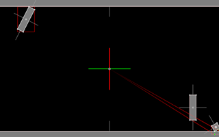
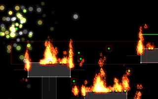
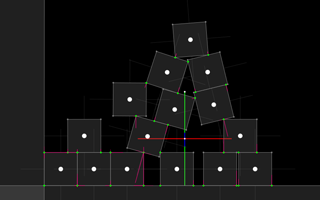

In the process of writing my thesis, I wrote a toy physics engine in C++ with OpenGL and SDL 1.2. The constraint-based impulse physics solver I used closely mirrors that of Box2D; however, the algorithm for generating collision contacts is novel. I also added collision detection for particles and soft-body Verlet dynamics; in the process, I produced a few interesting demo programs.
[ , Windows 32-bit ]

The classic arcade game implemented in a physics engine. This version of Pong has a twist: the square ball spins and the paddles can rotate!
[ , Windows 32-bit ]

This demo shows off some particle emitters: a "burst" style emitter, two colored flames, a rain emitter, and finally, a rain-of-fire emitter. All particles collide with the map (modeled after a SMB1 warp zone).
Emitters may use other emitters as their particle type. Out of the five emitters, only the "armageddon" emitter does this: the top-level emitter has settings similar to the rain emitter, but the particles created are fire emitters themselves.
[ , Windows 64-bit ]
[ , Mac OS X (UNIX executable)]

Stacking of rigid bodies is achieved by cataloging contacts and friction as constraints, then solving as shown in Iterative Dynamics with Temporal Coherence (Catto 2005). Contacts are visualized as green dots; the solved forces on them appear as magenta lines.
{kind=link}
{kind=link}
{kind=link}
{kind=link}